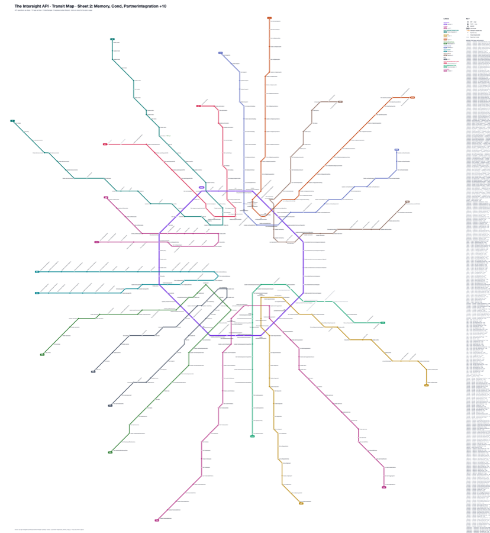
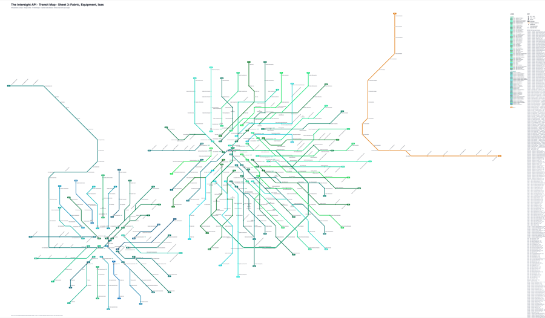
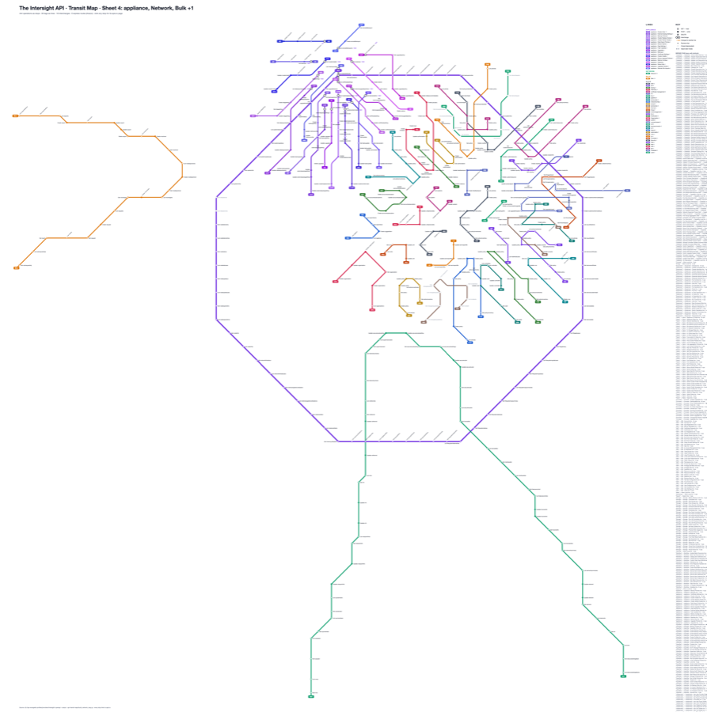
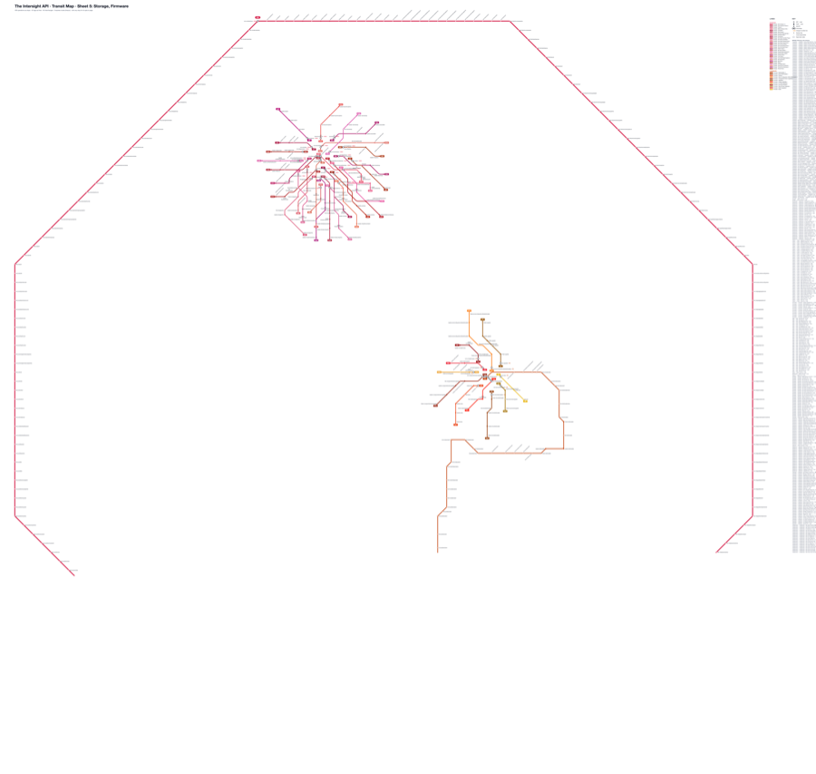
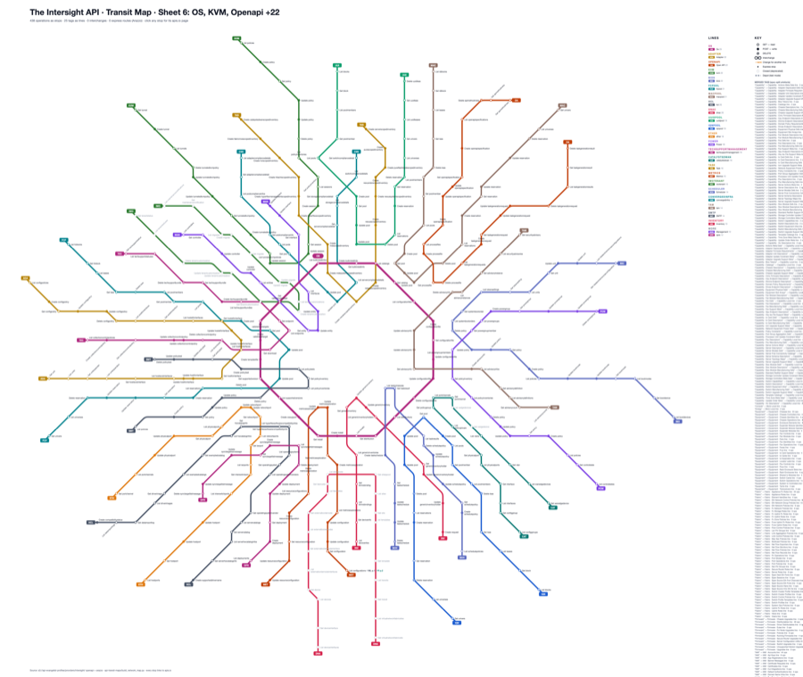
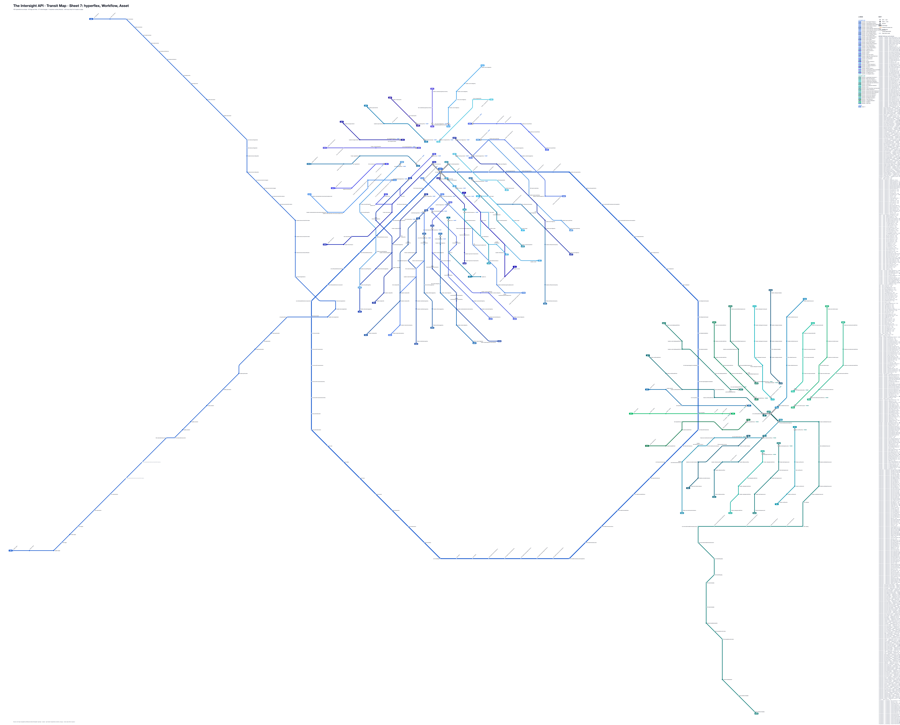
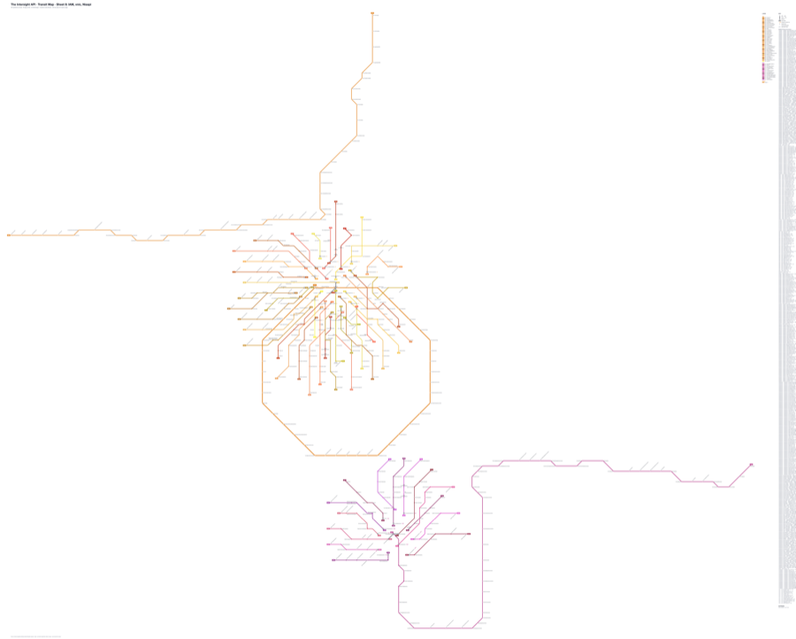
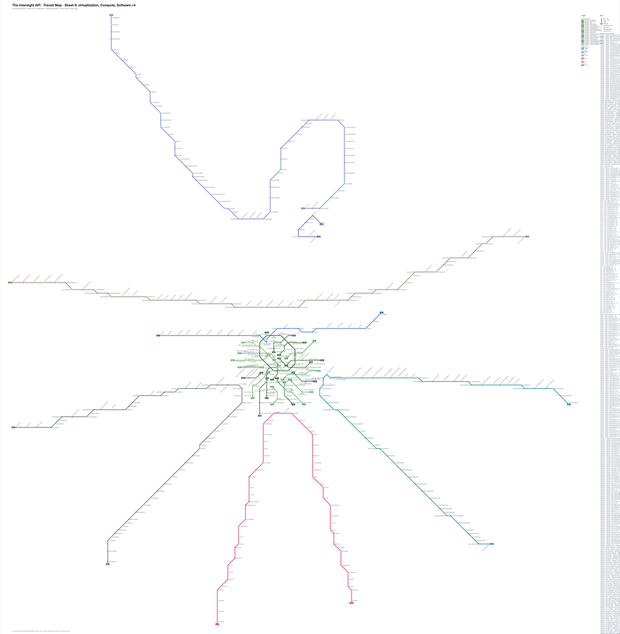

p.1 Capability Local 1, Capability Local 2, Capability Local 3
450 operations · 25 lines
- More
Interchanges to p.6 (1)
3963 operations on 9 sheets · products that interchange most share a sheet · on each sheet, "⇄CODE p.N" means change for that line on page N · every stop links to apis.io
450 operations · 25 lines
Interchanges to p.6 (1)

447 operations · 13 lines
Interchanges to p.6 (1)

445 operations · 76 lines
Interchanges to none

444 operations · 56 lines
Interchanges to none

439 operations · 42 lines
Interchanges to none

438 operations · 25 lines

435 operations · 60 lines
Interchanges to none

435 operations · 56 lines
Interchanges to none

430 operations · 27 lines
Interchanges to none